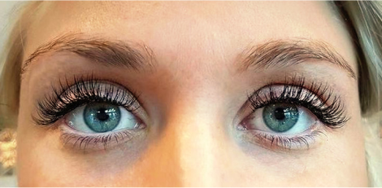
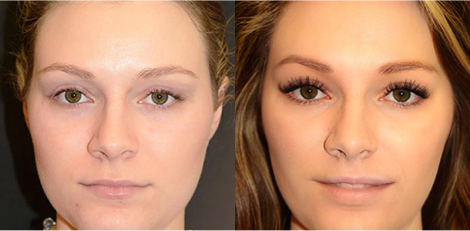

HIT kosmetyczny: „Rzęsy rosną jak szalone w kilka dni. Lepsze niż sztuczne!”. Ta rewolucyjna kuracja podbija Internet. Zamówienia idą w tysiącach!
Przed
Po 15 dniach
Nasze forum zalała fala zdjęć prezentujących szokujące metamorfozy kobiet. Czytelniczki pokazują swoje zdjęcia PRZED oraz PO kuracji z pomocą naturalnego preparatu na intensywny porost rzęs.
Nawet kobiety, które wcześniej straciły niemalże wszystkie rzęsy, po 15 dniach cieszą się wyrazistym wachlarzem rzęs. Aż trudno uwierzyć, że zdjęcia „PO” nie przedstawiają świeżo doklejonych sztucznych rzęs!
Efekt jest jednak naturalny i… zdecydowanie piękniejszy. A najlepsze jest to, że kosztuje ułamek sumy, jaką trzeba wydawać na sztuczne rzęsy. Skąd tak wysoka skuteczność kuracji i zdumiewająco szybkie efekty? Gdzie zdobyć ją w najlepszej cenie? Dowiedz się, czytając artykuł.
To rewolucja kosmetologiczna – tusz do rzęs przestaje być potrzebny!
Nowy preparat na intensywny porost rzęs szybko skradł serca kobiet w całej Europie. To dlatego, że nawet najkrótsze, najrzadsze i najsłabsze włoski w kilka dni zamienia w zjawiskowy wachlarz rzęs niczym skrzydła motyla.
Stosowanie nie ma żadnych efektów ubocznych, bo preparat ma naturalny skład. Co więcej, efekty są trwałe i nie mijają zaraz po zakończeniu stosowania.
Oto kilka opinii kobiet, które już przeszły tę kurację:
„Koniec kompleksów…”
Anna wyznaje, że wcześniej nie lubiła patrzeć w lustro: „Było mi wstyd, że jako kobieta nie miałam czasu ani pieniędzy, żeby o siebie zadbać i chodzić na rzęsy, jak koleżanki…”.
Jej samoocena podskoczyła mocno w górę po zastosowaniu kuracji:
„Teraz czuję się piękna, a do tego dumna, że mam sprytny sposób na naturalnie długie rzęsy. Nie marnuję pieniędzy ani czasu na doklejanie rzęs u kosmetyczek.”
Przed
Po 15 dniach
„Nie muszę się malować!”
Iwona wraz z nowym wyglądem odzyskała pewność siebie:
„Narzeczony mi kiedyś powiedział: Nooo, Iwona, z rana to Ty już nie jesteś taka piękna… Śmiał się. Nie muszę Wam chyba tłumaczyć, jak mnie to ubodło.
Potem codziennie wstawałam godzinę przed nim, żeby zdążyć się pomalować. ALE! Przestałam to robić już po tygodniu stosowania tego serum. Nie muszę, bo wyglądam pięknie od razu po przebudzeniu.
Moje rzęsy są długie, gęste i czarne, jakbym dopiero co je podkręciła zalotką i wymalowała najdroższym tuszem. A Marek (mój narzeczony) śniadanka do łóżka mi zaczął przynosić… 🥰”
Przed
Po 15 dniach
„Mam rzęsy dłuuugie jak firanki!”
Marzena nie mogła malować rzęs tuszem z powodu alergii i nadwrażliwości oczu. Dzięki tej kuracji spełniła marzenie o zniewalających rzęsach:
„Bez makijażu czułam się jak szara myszka i zazdrościłam przyjaciółkom, że mogą podkreślać urodę. Teraz to one mi zazdroszczą, bo wyglądam świetnie bez żadnego tuszu: rano bez makijażu, na basenie czy w saunie. Po prostu rewelacja!”.

Przed
Po 15 dniach
„Oszczędzam kupę kasy!”
Kamila przez 2 lata chodziła do kosmetyczki na zabieg doklejania sztucznych rzęs. Łącznie wydała na to około 12 000 zł.
„Teraz oszczędzam na rzęsach tyle pieniędzy, że pojadę za to na wakacje do ciepłych krajów albo kupię samochód” – pisze z radością Kamila.
Przed
Po 15 dniach
„Hipnotyzuję spojrzeniem!”
Paulina zwraca uwagę na skuteczność i brak efektów ubocznych kuracji:
„Moje rzęsy były długie, ale niestety bardzo rzadkie, cienkie i jasne. Jak malowałam je tuszem, to wyglądałam jak kreatura. Używałam jakichś odżywek, ale mało co pomagały. Do tego po aplikacji szczypały mnie oczy. Często nawet puchły.
A ten preparat nie dość, że zagęścił i przyciemnił mi rzęsy w dosłownie 2 tygodnie, to jeszcze nie powoduje żadnych alergii. Jestem w szoku, że on jest taki niedrogi!”.
Przed
Po 15 dniach
Tego odkrycia dokonała Polka
Kuracją, która gwarantuje tak radykalne wydłużenie, zagęszczenie i przyciemnienie rzęs jest bioaktywator keratynowy wynaleziony przez dr Małgorzatę Daszyńską – kosmetolożkę cenioną w całej Europie.
Bioaktywator keratynowy stymuluje rzęsy i brwi na aż 5 poziomach (długość, grubość, wzrost, wzmocnienie, ochrona). To prawdziwy przełom w dziedzinie kosmetologii! A najlepsze, że każda kobieta w Polsce może z niego skorzystać, by raz na zawsze zapomnieć o potrzebie stosowania tuszu albo marnowaniu pieniędzy na doklejanie sztucznych rzęs u kosmetyczki.
Te efekty brzmią jak marzenie, ale są w 100% potwierdzone naukowo!
Bioaktywator keratynowy dr Daszyńskiej został przebadany przez 7 laboratoriów na całym świecie. W testach brało udział aż 60 000 kobiet. Wszystkie badania potwierdziły ponad wszelką wątpliwość, że kuracja:
- przywraca do życia uśpione lub martwe mieszki włosowe na powiekach lub brwiach – już po około 2 dniach stosowania nowe i mocne rzęsy (lub brwi) zaczynają rosnąć nawet w miejscach wieloletnich przerzedzeń (żadna dostępna na rynku odżywka ani serum nie posiada tej właściwości)
- ekstremalnie przyspiesza wzrost włosków i wydłuża rzęsy minimum o 3 mm (rekordzistka wydłużyła rzęsy aż o 9 mm!) – po 15 dniach naturalne rzęsy wyglądają lepiej niż doklejane sztuczne
- przynajmniej 2-krotnie zagęszcza rzęsy i pogrubia włoski o 60% – tym samym sprawia, że rzęsy i brwi są jeszcze wyrazistsze
- radykalnie zapobiega wypadaniu rzęs i brwi – mocno zagnieżdża włoski w cebulkach i wydłuża cykl życia włosa o około 300%
- intensywnie wzmacnia i odżywia strukturę włosków – rzęsy i brwi są silne i odporne na wypadanie, łamanie, uszkodzenia mechaniczne i promienie UV
- przyciemnia włoski – sprawiając, że stają się wyraziste bez potrzeby farbowania np. henną.
Nagrody sypią się jedna po drugiej
Można śmiało stwierdzić, że nasza rodaczka rozsławia Polskę na cały świat. Za wynalezienie bioaktywatora keratynowego dostała już kilkanaście nagród branży beauty, w tym Best Cosmetological Discovery of the Year. W branży kosmetologicznej ta nagroda jest tak prestiżowa jak Nagroda Nobla!
W przeciwieństwie do dostępnych na rynku odżywek do rzęs, bioaktywator keratynowy wynaleziony przez dr Daszyńską:
- zapewnia szybkie i trwałe efekty – po 15 dniach kuracji mieszki włosowe są raz na zawsze „zaprogramowane” do produkcji długich, gęstych i mocnych rzęs
- sprawia, że rzęsy odrastają nawet w miejscach wieloletnich przerzedzeń (ponieważ przywraca do życia nawet obumarłe mieszki włosowe)
- nie powoduje alergii ani podrażnień – jest polecany przez okulistów
- może być stosowany zarówno na górną, jak i dolną powiekę oraz na brwi
- jako jedyny na rynku ma działanie potwierdzone naukowo
- jest bardzo wydajny – jedno opakowanie starcza na całą kurację
Trwa promocja – duży rabat dla wszystkich Polek
Pani dr Małgorzacie Daszyńskiej serdecznie gratulujemy sukcesu naukowego i życzymy powodzenia w dalszej pracy.
Z kolei Wam, Drogie Czytelniczki, podajemy link do oficjalnej strony dr Daszyńskiej. Tam sama pani doktor szczegółowo opisuje działanie kuracji. Na tej stronie możecie też zamówić kurację biokatywatorem keratynowym w świetnej promocji. Promocyjna obniżka ceny trwa do końca dnia .
Dicount kończy się:
Stara cena:
Nowa cena:
Autorka artykułu:
Agata Kwiecińska,
redaktorka działu STYL i ZDROWIE
KOMENTARZE(139 komentarzy)
Eliza
a czy mozna uzywac ten produkt jak sie ma doklejone sztuczne rzesy? bo ja jeszcze mam doklejone sztuczne
Agata Kwiecińska
@Eliza, oczywiście, że można.
Justyna
Moja bratowa używała przed ślubem, nikt jej nie wierzył, że to naturalne rzęsy ma takie długie, nawet dała dotykać, żeby udowodnić że nic się nie rozmazuje ani nie jest plastikowe. NO HIT rzeczywiście!! Zamowiolam wczoraj dziś ma być kurier, napisze jak moje efekty 😋
Milenka
Kochane Kobietki, bardzo z całego serca WAM polecam tą kurację. Używałam niecały tydzień, a wszyscy zwracają uwagę jak długie mam rzęsy, a ja ich nawet nie tuszuję ani nic, cudo po prostu!!!! Ale nie widziałam w aptekach ani sklepach, tylko na tej stronie można zamówić.
Beti
@Milenka na której stronie to można zamówić?
Agata Kwiecińska
@Beti Kurację można zamówić na stronie, do której link podajemy na końcu artykułu 😊 Jak nie możesz znaleźć, daję Ci link również tutaj, klik >>
Olga
Jaaaaj, ale super. Właśnie szukałam ratunku dla moich rzęs, bo bardzo mi się przerzedziły.
Iwona Wiecek
Kobiety,NIE PRZYKLEJAJCIE sobie sztucznych rzęs nie dość że ładujecie kupe kasy psu w du*e, to jeszcze wyglądacie sztucznie jak jakies wiejskie dżakondy……
gabriela
@Iwona Wiecek Jak masz dobrą kosmetyczke to ci przykleji tak że nie będzie znać że sztuczne. Bardziej bym zwróciła uwagę na to że jak przyklejasz sztuczne rzęsy to ci naturalne wypadają a potem to już nie ma do czego przyklejać
Iwona Wiecek
@gabriela No dlatego ja nie doklejam.
Bożena
Ja jak u mamy w piecu kaflowym paliłam, to wtedy mu buchnęło i wypaliło brwi, przez lata malowałam kredką albo henną, a tu O, smarowałam tą odżywką i mi normalnie odrosły w tydzień. Teraz użwam na rzęsy i jestem bardzo bardzo zadowolona
Elka
Ciężko mi było uwierzyć, że to robi takie cuda. Sprawdziłam na sobie, proszę przed i po 12 dniach różnica. Ten produkt po prostu wymiata !!
Agatka
wcześniej nie wyścibiłam nosa z mieszkania bez pomalowanych oczu… raz jak musiałam szybko wyskoczyć do kuriera sąsiad mnie zobaczyl i zbladł. Zapytal na co jestem chora, a ja po prostu bylam nie pomalowana, to było takie uwłaczające 😕 zamowilam ten bioaktywator keratynowy i mam sto razy lepsze rzesy niż jak malowałam, a tamten chlop mnie teraz w drzwiach przepuszcza, hah…
Paulina
Dooooobra, zamawiam , póki promocja 😋
Strona < 1/19 >